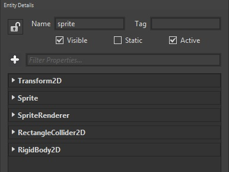
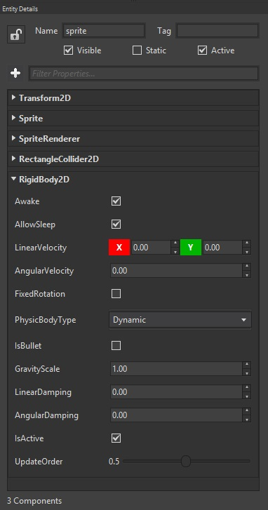

Goal
Nowadays adding physic behaviours to our games is as immediate as adding a few lines of code. Wave Engine wraps low level physic components leveraging a simple API which follows the guidelines found all over the engine: component-based architecture, specific renderer for each drawable component, etc.
On the following paragraphs we will learn how to add a rigid body physic capability to an entity, acting according to the world gravity.
Hands-on
Converting an entity into a physic object is particularly easy with Wave Engine. There are multiple forms of physic objects available, but here we will cover the most basic one: RigidBody2D. It can be found under WaveEngine.Framework.Physics2D namespace, where the rest of physic capabilities are collected.
Wave Engine's 2D physics are based on Farseer Physics Engine which, at the same time, is based on Box2D; so, there is a relationship between what this last one offers for a 2D rigid body and what Wave Engines does. The most popular properties which allow to configure the physic behaviour for this element are (the summary is taken from Box2D's official documentation found here):
- Damping: is used to reduce the world velocity of bodies. Damping is different than friction because friction only occurs with contact. Damping is not a replacement for friction and the two effects should be used together. Damping parameters should be between 0 and infinity, with 0 meaning no damping, and infinity meaning full damping
- Friction: is used to make objects slide along each other realistically. [...] The friction parameter is usually set between 0 and 1, but can be any non-negative value. A friction value of 0 turns off friction and a value of 1 makes the friction strong
- Restitution: is used to make objects bounce. The restitution value is usually set to be between 0 and 1. Consider dropping a ball on a table. A value of zero means the ball won't bounce. This is called an inelastic collision. A value of one means the ball's velocity will be exactly reflected. This is called a perfectly elastic collision
- Rotation: expressed in radians, allow the entity to rotate during the physics computation happens
With Wave Visual Editor
You can see Load a Sprite recipe from this web as starting point.
Select the Sprite Entity and use the icon from Entity Details section to add a RectangleCollider2D and RigidBody2D Components (in that order cause RigidBody requires a Collider):

Set the physic properties for our RigidBody2D component:

And let them fall!
With Visual Studio (for Windows or Mac)
We'll use the Load a Sprite recipe from this web as starting point.
Select Open C# Project option from File menu.
In Visual Studio we'll open the scene file and add the code (in CreateScene method):
var entity = this.EntityManager.Find("sprite");
entity.AddComponent(new RectangleCollider2D())
.AddComponent(new RigidBody2D()
{
AllowSleep = true,
LinearVelocity = Vector2.Zero,
AngularVelocity = 0.0f,
Friction = 1.0f,
Restitution = 1.0f,
FixedRotation = false,
Mass = 1.0f,
EnableContinuousContact = false,
IgnoreGravity = false,
Damping = 0.4f,
Rotation = 0.0f,
CollisionCategories = Physic2DCategory.Cat1,
CollidesWith = Physic2DCategory.All
});
The resulting executing will show a falling sprite by gravity.
Wrap-up
We have introduced the RigidBody2D component, and some of the most used properties. Finally, we have created an Sprite Entity with this which behaves like a physic object.